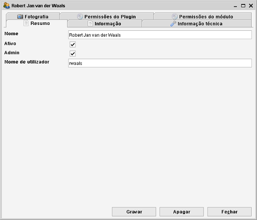
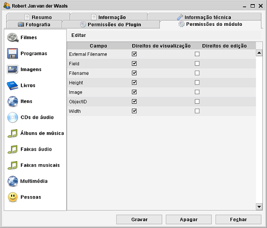

Por predefinição, qualquer utilizador que inicie a sua instalação do Crow
verá toda a informação que introduziu. Poderá inclusivamente alterar ou
apagar os seus itens.
Ao criar utilizadores determina quais é que têm acesso e o que é que são
autorizados a fazer. Os utilizadores são criados no módulo Utilizadores (este
módulo só está disponível para administradores). O módulo funciona
como qualquer outro módulo. Pode criar, procurar, modificar e remover utilizadores.
Situação predefinida
Por predefinição, já existe um administrador no Data Crow. Este utilizador tem
o nome predefinido "sa". Não tem palavra-passe definida, o que permite ao Data Crow iniciar
sessão automaticamente. Esta é a situação predefinida.
Criar um utilizador
Pode criar um utilizador selecionando o módulo Utilizadores e escolhendo "Criar novo". Abre o
formulário de item e pode começar a introduzir
informação.

A informação mais importante a introduzir é o "Nome de utilizador".
Este nome é usado para iniciar sessão no Data Crow. Uma vez gravado, o nome de utilizador
não pode ser alterado!
A propriedade "Admin" (desmarcada por predefinição) é muito importante. Se a marcar,
o utilizador torna-se um administrador e terá todas as permissões no Data Crow. Recomenda-se
que só haja um administrador.
Administradores
Algumas operações só são permitidas a administradores:
-
Remover/apagar itens.
-
Alterar as definições da aplicação.
-
Gerir utilizadores.
-
Criar modelos.
Permissões dos módulos
No separador Permissões do módulo pode definir os direitos de acesso do utilizador para o
módulo e os campos. Para cada campo, tem a opção de permitir a edição e a
visualização.

Ao desmarcar todos os direitos num campo torna-o invisível, o utilizador não poderá ver
nem editar o campo.
Para negar acesso a um módulo, terá de desmarcar todos os dreitos para todos os campos.
Usando o menu Editar pode rapidamente definir todos os campos como só de leitura ("Permitir ver
todos os campos") ou como editáveis ("Permitir editar todos os campos"). Para negar acesso ao módulo
(removendo todos os direitos de todos os campos) pode usar a opção de menu "Negar acesso ao módulo".
Permissões do Plugin
Alguns plugins só estão disponíveis depois de os utilizadores terem acesso autorizado. No separador
Permissões do Plugin pode dar ou negar permissão ao utilizador, marcando ou desmarcando a caixa correspondente.
Alterar a plavra-passe
Caminho de menu: Utilizador > Alterar palavra-passe
As palavras-passe não são predefinidas. No menu Utilizador pode alterar a sua palavra-passe
("Alterar palavra-passe"). Primeiro introduza a palavra-passe atual (ou deixe em branco se ainda não definiu nenhuma)
e depois introduza a nova palavra-passe duas vezes.